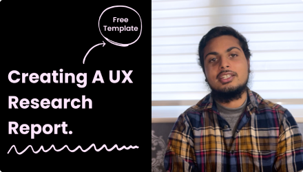

Putting available talent to its best use is key for the welfare of individuals and of the society to
which they belong. Unequal access to opportunity in education and labour markets tampers with the
allocation of talent leading to more inequality.
This newsletter focuses on the misallocation of talent by economic class and gender in different
settings, highlighting how temporary shocks
Such as the current pandemic can have permanent consequences.
Free 3D Illustration pack by Alzea.
There’s a massive trend around 3D illustrations right now, this could be related to the rise of 3D
tools to create illustrations. Illustrations can be a great way to add some personality to your
designs and make them more engaging. This 3D illustration pack is perfect to help you out with this.
Remote design sprint Figma template by Vic.
Facilitating a design sprint can be challenging. Facilitating a design sprint remotely is even more
challenging. Luckily Nicole has made this amazing template to help us out with this problem. The
file consists of team exercises, sticky notes, flowchart nodes, assets to help you create your own
tasks.

Creating a UX Research Report doesn’t have to be hard...
Writing up a UX research report is just as important as conducting the research itself. I’ve created
a template to help you create your research report, so you can actually focus on synthesising the
findings, rather than worrying about creating a brand-new deck.
What do you miss the most about being the office?
That’s all folks!
Sweet potato. Want to hear more of some things? Less of others? Just want to say hi? Let us know below!
I’d love to hear from you.